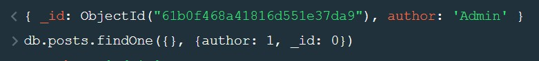
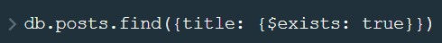

Иногда нам не нужны все пары ключ/значение документа. В этом случа мы можем передать второй аргумент методу find указывая нужные нам ключи.
Ключ id возвращается по умолчанию, что бы отменить вывод ненужного ключа, свойству можно передать 0 или false
$lt - меньше чем
$lte - меньше либо равно чем
$gt - больше чем
$gte - больше либо равно чем
Пример выше отфильтрует все записи меньше либо равно 20 но больше либо равно 10
Такие запросы полезны при поиска по дате
$ne - not equal - неравен
$in - используется для запроса любого из заданных значений
Т.е. будут отфильтрованы все записи в которых author равень либо Admin, либо Max
$nin - Противоположный оператору $in, отфильтрует все записи которые не равны значениям в массвие.
$or - оператор или получает два варианта фильтров и вернет документы которые будут сооь=тветствовать или первому или второму условию
$regex - предоставляет возможности регулярных выражений.
Допустим у нас эсть вот такой документ
Что бы получить такой документ по элементы массива в свойстве content, нужно выполнить вот такой запрос
Что бы установить лимит запрашиваемых документом, необходимо использовать метод limit и в качестве аргумента передать предельное количество документов
Для того что бы пропустить определенное количество документов, которые отвечают условиям фильтра необходимо использовать метод skip. В качестве аргумента передаем количество пропускаемых документов
sort - метод принимает объект с ключами по которым должна происходить сортировка
Допустим мы открываем первую страницу пагинации, наш запрос будет таким
При нажатии на вторую кнопку запрос будет выглядеть вот так
$exists - оператор который проверяет наличие поля у документа
Т.е. вубудт выведены записи у которых есть свойство title